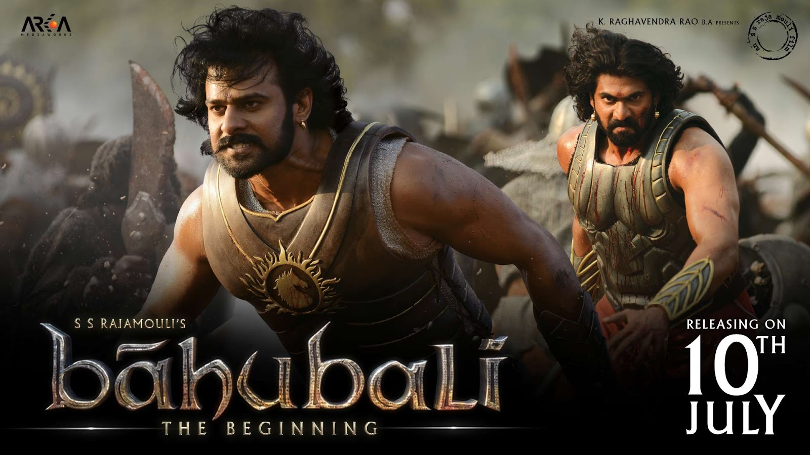
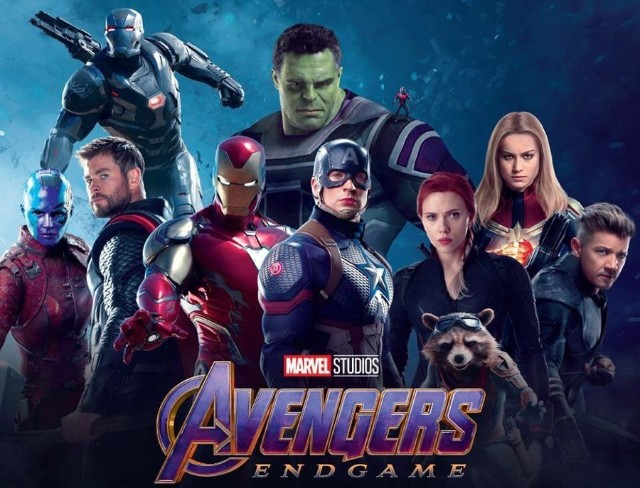

Free Guy
The film is visually stunning, with vibrant, colorful scenes that capture the chaotic energy of a video game world. The action sequences are well-choreographed and entertaining.
 view now!
view now!
Bahubali
"Baahubali" is not just a movie; it's an experience that combines epic storytelling with stunning visuals and memorable characters, making it a favorite for many.
 View now!Avenger Endgame
The film offers a sense of adventure as the protagonist explores different time periods, encountering various societies and challenges.
 View now!